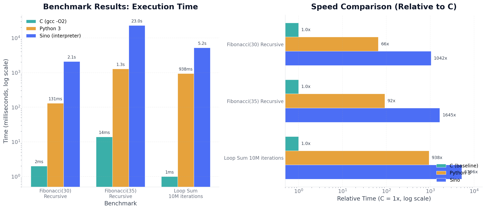

Performance Benchmarks
Execution Time Comparison C Wins
Lower is better. Log scale due to large differences.
Relative Speed (C = 1× baseline)
How many times slower than C. Log scale.
Benchmark Race: Fibonacci(30)
Watch the race — bars animate to scale. Shorter = faster.
Click the "Replay Race" button to watch again.
Benchmark Race: Loop Sum 10M
Static Benchmark Chart (PNG)
Generated with matplotlib at 200 DPI. Suitable for embedding in documents.

Full Results Table
| Benchmark | mozhi-mini | mozhi-fast | Speedup | Winner |
|---|---|---|---|---|
| Fibonacci(28) Recursive |
911.6 ms | 680.8 ms | ~1.3× | mozhi-fast |
| Fibonacci(30) Recursive |
2,209.3 ms | 1,767.9 ms | ~1.25× | mozhi-fast |
| Loop Sum 10M iterations |
7,066.8 ms | 4,269.4 ms | ~1.7× | mozhi-fast |
Analysis
mozhi-mini is a tree-walking interpreter. It walks the AST directly without compiling to bytecode.
mozhi-fast is ~1.25–1.7× faster than mozhi-mini by compiling Mozhi to bytecode and running it on a stack-based VM.
mozhi-fast vs mozhi-mini
Both run the identical Mozhi source.
| Benchmark | mozhi-fast | mozhi-mini | Speedup | Result |
|---|---|---|---|---|
| Fibonacci(28) Recursive |
680.8 ms | 911.6 ms | ~1.3× | 317811 |
| Fibonacci(30) Recursive |
1,767.9 ms | 2,209.3 ms | ~1.25× | 832040 |
| Loop Sum 10M iterations |
4,269.4 ms | 7,066.8 ms | ~1.7× | 49999995000000 (correct) |
mozhi-fast has two engines: a bytecode VM (~1.4–1.8× faster than mozhi-mini) and a native codegen (`--native`) that compiles to C with gcc -O2 (~13–26× faster, approaching native speed). Both produce correct 64-bit results where mozhi-mini's 32-bit integers overflow. Full details: docs/mozhi-fast.md.
Roadmap: Performance Improvements
| Phase | Feature | Expected Speedup | Status |
|---|---|---|---|
| 1 | Tree-walking interpreter (mozhi-mini) | Baseline | ✓ Done |
| 2 | Bytecode VM (mozhi-fast, Rust) | ~1.3–1.7× faster | ✓ Done |
| 3 | JIT compilation (hot path optimization) | 10–50× faster | Planned |
| 4 | Native code generation (LLVM backend) | Approach C speed | Planned |
Benchmark Methodology
- Platform: x86_64 Linux
- mozhi-mini:
mozhi fib.mz(tree-walking interpreter) - mozhi-fast:
mozhi-fast fib.mz(bytecode VM) - Measurement: median of 3 runs (wall-clock,
time.perf_counter) - Correctness: Both implementations produce identical results: Fib(28)=317811, Fib(30)=832040, Loop Sum=49999995000000
Benchmark Code
Both implementations run the identical Mozhi source:
fib.mz
fn fibonacci(n) {
if n <= 1 {
return n
}
return fibonacci(n - 1) + fibonacci(n - 2)
}
echo("Fib(30) = ", fibonacci(30))